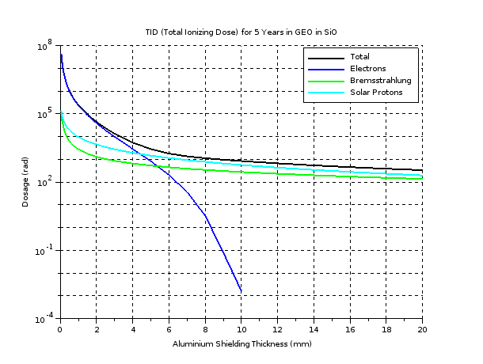

Radiation Resilience
CapabilityRealization
top-level > top-level > Logical Architecture > Capabilities > Radiation Resilience
Total Ionizing Dose (TID)
To gain a first impression of the expected radiation experienced by the satellite components the SPENVIS enviroment was used to obtain TID figures. The simulation was performed for a satellite in geostationary orbit with a lifetime of 5 years. The material was defined as silicon dioxide - the dielectric material in CMOS transistors which leads to threshold voltage shifts.
The expected TID is shown below for differing aluminium shielding thicknesses with the separate radiation sources shown as well as the total expected dosage.

With no shielding the dosage is very high - greater than 10 Mrad - which is beyod COTS component capabilities. However it can be seen that after 3.5 mm of shielding the expected dosage is reduced to 10 krad which is certainly possible for some COTS components.
This highlights the importance of shieling and indeed points that contigous metal casing is definitely needed - whether this is achieved on a satellite level or sub-system level remains to be seen.